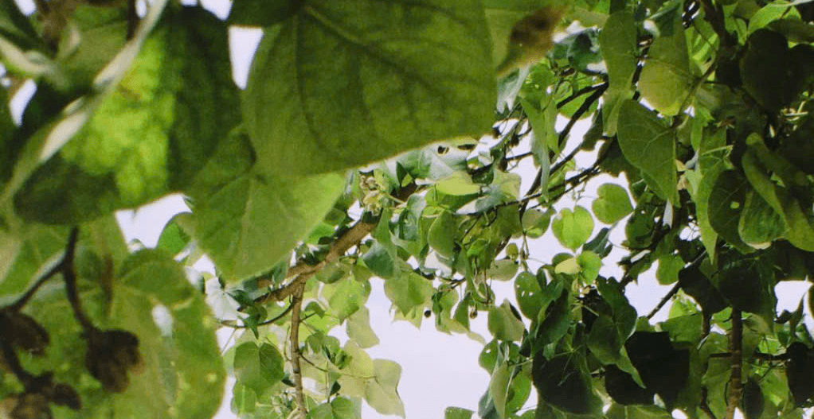

Nguyên lý suy giảm ánh sáng và hệ số bù sáng Bellows Factor
Khi bạn di chuyển ống kính ra xa khỏi mặt phẳng phim để đạt tỷ lệ phóng đại 1:1 hoặc 1:2, khoảng cách vật lý từ thấu kính sau tới bề mặt nhũ tương tăng lên đáng kể. Theo định luật nghịch đảo bình phương khoảng cách (inverse-square law), chùm quang thông chiếu lên từng milimét vuông nhũ tương bị phân tán trên một diện tích hình nón rộng hơn, khiến độ rọi quang học suy giảm nghiêm trọng. Hiện tượng này trong nhiếp ảnh buồng tối được lượng hóa bằng hệ số suy hao ống kéo (bellows extension factor), tính theo công thức m = d / f, trong đó độ phơi sáng thực tế có thể hao hụt từ 1 đến 2 stop so với giá trị hiển thị trên vòng khẩu độ vật lý.
Nếu người chụp chỉ tin vào máy đo sáng cầm tay hoặc thước ngắm ngoài mà không cộng bù sáng (exposure compensation), bức ảnh film macro tráng ra chắc chắn sẽ bị thiếu sáng nặng, làm mất sạch chi tiết ở các viền gân lá hay chân lông tơ của côn trùng. Trong môi trường số hóa của RfCamera, hệ thống shader tính toán tự động độ suy giảm lux của thấu kính macro ảo, giúp khung ngắm phản ánh chân thực độ sáng rọi xuống cảm biến mà không đòi hỏi người dùng phải lật bảng tra cứu bù sáng phức tạp giữa hiện trường.
Kiểm soát mặt phẳng tiêu cự mỏng và cấu trúc bokeh bọt khí
Ở khoảng cách lấy nét cực cận chỉ vài centimet, độ sâu trường ảnh (depth of field - DOF) co hẹp lại chỉ còn vỏn vẹn chưa đầy một milimét ngay cả khi bạn khép khẩu sâu xuống f/8 hoặc f/11. Mọi rung lắc dù là nhỏ nhất từ nhịp thở của người cầm máy hay cơn gió thoảng qua cành cây đều có thể đẩy điểm vàng lấy nét ra ngoài rìa chủ thể. Kỹ thuật then chốt ở đây không phải là xoay vòng lấy nét liên tục, mà là khóa chết thước đo trên thân ống ở mốc phóng đại mong muốn rồi nhẹ nhàng nghiêng cả thân máy tịnh tiến tới lui cho đến khi hình ảnh nét căng hiện rõ trên kính ngắm mờ.
Vùng ngoài tiêu cự (out-of-focus background) trong chụp macro analog đem lại cảm giác thị giác tách biệt hoàn toàn so với thuật toán xóa phông giả lập của điện thoại. Nhờ cơ chế tán sắc quang học tự nhiên của các thấu kính phi cầu cổ điển kết hợp cùng lớp hạt bạc phân bố ngẫu nhiên, các đốm sáng phản chiếu từ giọt sương sẽ biến thành những bong bóng bokeh hình tròn mềm mại, không bao giờ xuất hiện viền gắt hay hiện tượng răng cưa kỹ thuật số.

Thực hành cân bằng hạt bạc và nhũ tương độ nhạy thấp
Để ghi lại các chi tiết siêu vi như mắt kép của chuồn chuồn hay phấn hoa li ti, việc lựa chọn cuộn phim có kích thước tinh thể bạc siêu mịn là yếu tố sống còn. Những dòng phim có ISO thấp từ 50 đến 100 như Ilford Pan F Plus hoặc Kodak Ektar 100 sở hữu cấu trúc tinh thể T-Grain xếp khít, cho phép phóng đại bản in lên khổ lớn mà không bị vỡ hạt thành từng mảng đốm cát thô ráp. Tốc độ màn trập khi chụp phim ISO thấp thường phải kéo dài từ 1/15s đến 1/2s, đòi hỏi bạn phải sử dụng dây bấm mềm cơ học hoặc ngàm kẹp cố định.
Trong ứng dụng RfCamera, chế độ giả lập thấu kính macro tái hiện hoàn hảo cảm giác cơ học này bằng cách kết hợp cơ chế rung phản hồi haptic khi điểm nét rơi vào vùng trung tâm, đồng thời phát âm thanh tiếng chốt gương lật giảm chấn đặc trưng của các dòng máy cơ chuyên dụng thập niên 70, mang lại trải nghiệm bấm máy trang trọng và đầy tĩnh lặng.